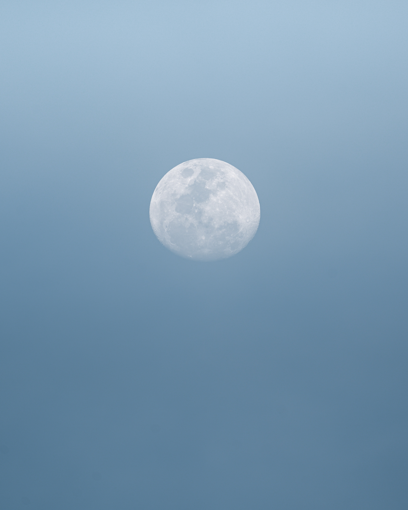

Full Moon
When you look up at the night sky, you might notice that the Moon looks a little different each night. This is due to our Moon's many phases and types. A full moon occurs when the side of the Moon facing Earth is fully lit up by the Sun. But did you know that not all full moons look the same? Sometimes, the Moon may appear to glow red. Other times, the Moon may appear larger than usual in our night sky. The Moon itself is not changing colors or sizes. Its changes in appearance are usually due to its position in relation to the Sun and Earth. Here are descriptions of a few of those unusual full moons.Types of Moons
- Super Moon
- Blue Moon
- Blood Moon
- MoonTypes